분리공정 문제 (1) 마굴루스 방정식의 유도
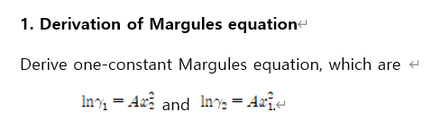
1-constant Margules equation은 이성분 액체 혼합물에서 활동도 계수 γi를 나타내는 경험식의 하나이다.
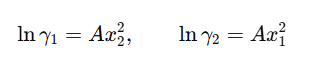
이렇게 나타나는데, 의미를 따져보면 두 액체가 혼합되어있을때, 각 1 2 성분의 활동도 계수는 A라는 상수 x 액상 몰분율로 나타낼 수 있다는 식이다. 이게 이상용액이면은 γ1=γ2=1가 성립되는데, 실제 액체는 다르다.
이거는 VLE에 쓰이는 개념이다. 액상이 비이상적이면 수정된 라울의 법칙에서
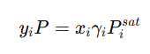
즉 K= γi Pisat / P 으로 쓴다. 이때 γi를 구하는 식 중에 하나다.
유도과정: 초과 깁스에너지를 가정한다.
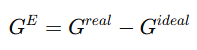 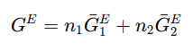
부분 몰당 깁스에너지에 각각의 몰을 곱해 더해주면 전체 초과 깁스에너지가 되는 위 식을 꺼낸다.
이때 각 성분별 초과분몰깁스에너지를 다음과 같이
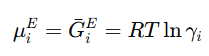
정의할 수 있다.
증명: 여기서 케미컬포텐셜을 가져올 건데, 케미컬 포텐셜 식의 액체는 다음과 같다.
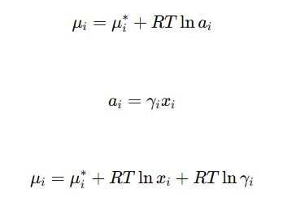
이때 이걸 해석해보면
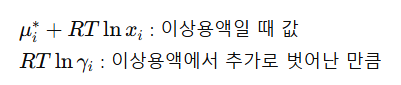
따라서 초과 분몰 깁스에너지는 다음과 같다.
따라서
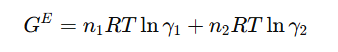
이제 이걸 전체 몰수 n1+n2로 나눠주게 되면 다음과 같은 식이 만들어진다. 이때 GE/전체몰 = g이다.
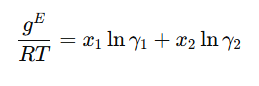
일단 여기까지는 모든 식에 성립할 수 있다. 마굴레스 식에서는 안쓰인다.
마굴레스 식 같은 경우에는 여기서 다음 식을 또 가정한다.
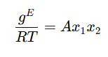
왜?: 만약 성분1만 있거나 성분 2만 있는 경우에는, gE=0이어야 한다. 왜냐면 이상용액이거든.. 그래서 Ax1x2 형태로 간단히 가정한거다.
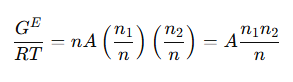
따라서 다음과 같이 된다. 이때 활동도의 정의식이 사용된다.
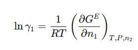
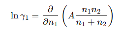 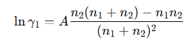
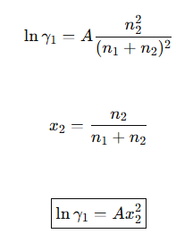
다음으로 성분 2도
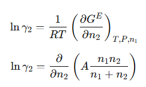 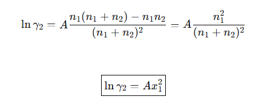
따라서 다음과 같다.
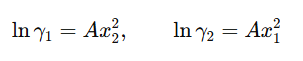
2-constant Margules와 차이
1-constant는
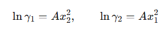
이라서 구조가 아주 대칭적입니다.
반면 2-constant는 보통
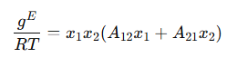
같이 더 일반화해서 씁니다.
그러면
성분 1이 2 속에 있을 때의 거동
성분 2가 1 속에 있을 때의 거동
이 서로 다르게 표현됩니다.
즉, 1-constant는 너무 단순해서 좌우 대칭,
2-constant는 비대칭성까지 반영 가능입니다.